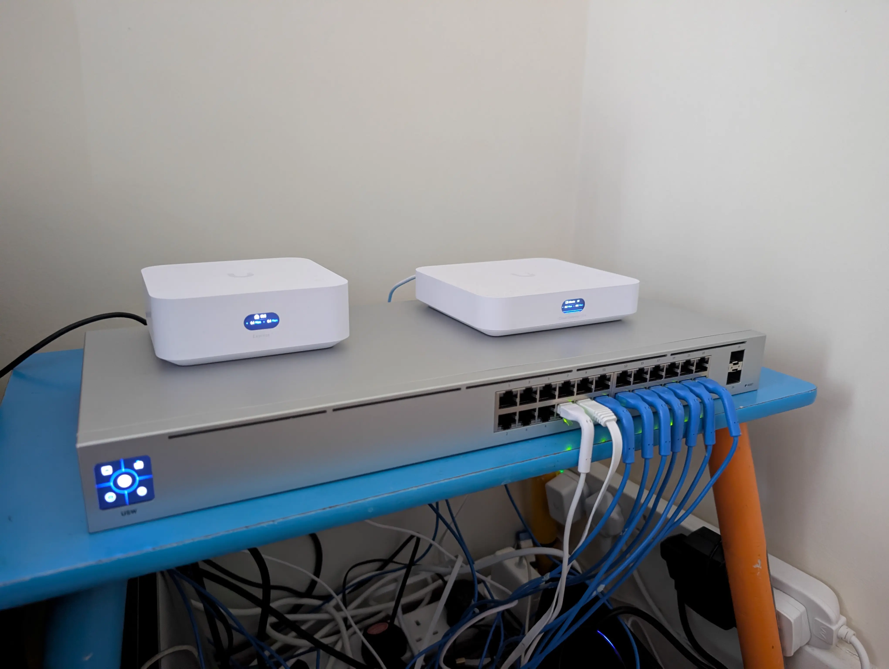

My networkMy unifi network cable management isnt real
My main gateway is the UniFi Cloud Gateway ultra it is good enough for my needs (my internet is 40mbps down 8mbps up vdsl) but i want a udm pro My UniFi devicesI have had the UCG ultra since like may 2025 i cant remember but it has been very good and it has made me buy more unifi things like i have 9 unifi devices and 5 access points i probably dont need that many but they can also reach to the top of my garden so my whole house and garden has wifi now 
TrafficAll of my traffic is routed through Mullvad VPN (i used to use proton but it hasnt updated in the screenshot) the ping times are quite good they only add like 1-2ms from my normal 9-10ms but i have to use the non mullvad owned ones because for some reason those ones made me get like 50-100ms more ping idk what that is 
Everything is plugged into the USW-24 and some of them are running over powerline with 5 TL-PA8010ps because i cant get wires to them and mesh was unreliable the powerline is like 50-100mbps lower bandwidth than mesh but at least it works properly |
Visitor Count: craig
This page is best viewed with